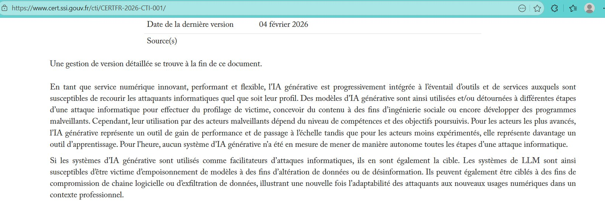
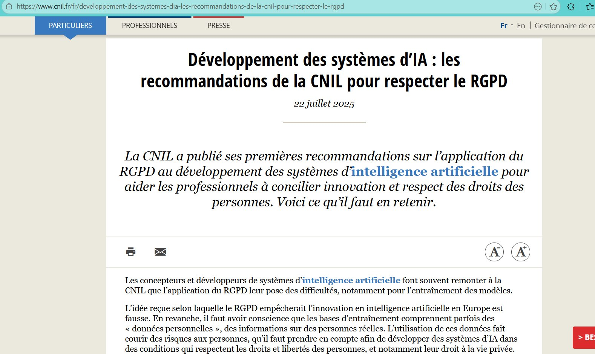
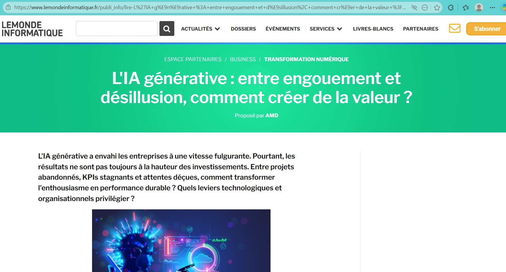

Une veille technologique sur l'intégration des outils d'IA générative dans les environnements professionnels, entre gains de productivité et enjeux de sécurité des données.
L'IA générative peut-elle vraiment aider les équipes IT sans mettre en danger les données de l'entreprise ?
Depuis 2022, des outils comme ChatGPT, Copilot ou Gemini sont massivement utilisés en entreprise. Pendant mon alternance à la Caisse des Dépôts, j'ai vu se déployer un outil interne (Archi+) conçu pour utiliser l'IA générative sans exposer les données vers des serveurs externes. Cette tension entre productivité et sécurité est exactement ce qui m'a poussé à choisir ce sujet : c'est une problématique qui touche directement le métier de technicien SISR.
Pour répondre à cette question, je n'ai pas pris une seule source et répété ce qu'elle dit. J'ai sélectionné trois sources complémentaires (officielle, juridique, presse professionnelle) et je les ai croisées entre elles pour faire émerger les convergences, les angles morts et les sujets de fond.
Une veille technologique n'a de valeur que si elle est régulière, structurée et critique. J'ai mis en place un processus en quatre étapes pour éviter le piège du copier-coller et faire travailler les sources entre elles.
Trois sources choisies pour leur complémentarité : officielle (ANSSI), juridique (CNIL), presse pro (Le Monde Informatique). Chaque source couvre un angle que les autres ne couvrent pas, ce qui permet une vision complète d'un même sujet.
Je consulte chaque source directement sur son site, sans agrégateur intermédiaire. Cette méthode me force à m'imprégner de la ligne éditoriale de chaque source et à ne pas dépendre d'algorithmes de tri. Mes favoris navigateur sont organisés par dossier thématique (Officiel / Presse / Communauté).
Un sujet n'est retenu pour analyse que s'il apparaît dans au moins deux sources sur les trois. Cette règle évite de relayer les effets de mode et concentre l'attention sur les tendances de fond.
Pour chaque sujet retenu, je rédige une fiche datée : source, contenu factuel, et ce que ça m'apporte concrètement en tant que futur technicien SISR. Ces fiches forment la trace écrite de ma veille.
Plutôt que d'utiliser un agrégateur RSS, j'ai choisi de visiter chaque source directement. Cela demande un peu plus de discipline, mais cela me permet de mieux connaître chaque site et de repérer les éléments éditoriaux qu'un agrégateur fait disparaître (rubriquage, mise en avant, contexte visuel).
Au total, ma veille me prend en moyenne 15 à 20 minutes par jour. Les sujets qui méritent une analyse approfondie sont notés dans un document de travail pour être transformés en fiche de veille plus tard.
Chaque source est présentée ici avec sa fiche d'identité, une capture d'écran, et la raison précise pour laquelle je l'ai retenue. Le travail d'analyse vient ensuite, quand je les fais dialoguer entre elles.

L'Agence nationale de la sécurité des systèmes d'information est l'autorité française en matière de cybersécurité. Ses publications (alertes, rapports, recommandations) sont la référence pour évaluer une menace dans le contexte français.
Je l'ai retenue parce que c'est la seule source officielle qui produit des analyses techniques détaillées sur l'IA générative côté défense ET côté attaquants.

La Commission nationale de l'informatique et des libertés est l'autorité française de protection des données. Sur l'IA, elle publie depuis 2023 des fiches pratiques qui clarifient l'application du RGPD aux systèmes d'apprentissage automatique.
Je l'ai retenue parce qu'elle apporte le cadre juridique que l'ANSSI n'aborde pas. Pour un futur SISR, comprendre ces obligations est essentiel : c'est nous qui les mettons en œuvre techniquement.

Média de référence de l'IT professionnelle en France. Couvre quotidiennement l'actualité cybersécurité, cloud, IA et transformation numérique avec un angle entreprise et retours d'expérience.
Je l'ai retenu comme intermédiaire entre les rapports officiels (denses, lents) et la veille quotidienne. Quand un sujet sort à l'ANSSI, c'est souvent LMI qui le rend lisible et l'illustre avec des cas concrets.
C'est ici que la veille prend sa valeur. Lire une source seule, c'est de l'information. Les faire dialoguer entre elles, c'est de l'analyse. Voici les trois grandes lectures que je tire du croisement de mes trois sources.
Comment les trois sources couvrent-elles les risques liés à l'IA générative en entreprise ? Le tableau ci-dessous montre que chaque risque est abordé sous un angle différent selon la source, ce qui permet d'en avoir une vision complète plutôt que partielle.
| Risque | ANSSI | CNIL | Le Monde Informatique |
|---|---|---|---|
| Fuite de données | Recommande le cloisonnement strict du SI | Violation potentielle du RGPD si données personnelles | Cas concrets d'entreprises (Samsung 2023, etc.) |
| Prompt injection | Référencé comme vecteur d'attaque émergent | Hors champ direct | Vulgarise les démonstrations publiques |
| Shadow AI | Recommande une gouvernance claire des usages | Rappelle la responsabilité de l'employeur | Enquêtes sur la diffusion en entreprise |
| Empoisonnement de données | Identifié pour les modèles internes | Recommande filtres et journalisation | Couvre les cas marquants |
Les trois sources convergent sur un point : le cloisonnement entre les systèmes d'IA et le reste du SI n'est plus optionnel. L'ANSSI le recommande techniquement, la CNIL l'impose juridiquement, et Le Monde Informatique le documente sur le terrain à travers des cas d'entreprises.
L'AI Act européen, les recommandations CNIL et les guides ANSSI ne sont pas des sujets séparés : ils forment un système réglementaire cohérent. La CNIL applique le RGPD au cas de l'IA, l'ANSSI traduit cela en mesures techniques, et l'AI Act vient ajouter une couche spécifique aux usages à risque.
Pour un futur technicien SISR, comprendre cet emboîtement est essentiel : c'est ce qui permet d'expliquer à un utilisateur pourquoi telle pratique est interdite, et de proposer une alternative conforme.
L'un des intérêts de croiser ces trois sources est d'avoir trois temporalités différentes sur un même sujet, ce qui permet de suivre son évolution.
Concrètement, sur le sujet de la prompt injection : LMI en parlait dès 2023 dans des articles d'actualité, la CNIL l'a abordée dans ses recommandations de 2025, et l'ANSSI l'a officialisée comme vecteur d'attaque dans son rapport de février 2026. Suivre les trois en parallèle permet de comprendre comment un sujet passe du signal à la doctrine officielle.
Une veille à une seule vitesse est une veille incomplète. La presse pro donne l'actualité, l'autorité juridique donne le cadre, l'autorité cyber donne la doctrine. C'est leur combinaison qui permet de comprendre vraiment un sujet plutôt que d'en avoir une vue partielle.
Pendant mon alternance, j'ai observé la mise en place d'Archi+, l'outil interne d'IA générative déployé à la Caisse des Dépôts. Plutôt que de décrire cet outil de manière isolée, je le présente ici comme la mise en œuvre concrète des recommandations issues de ma veille.
Les collaborateurs voulaient les bénéfices de ChatGPT (aide à la rédaction, recherche d'informations, assistance au code) sans envoyer de données sensibles à des serveurs externes. Sans alternative interne, le risque de Shadow AI était certain.
Archi+ repose sur un modèle de langage hébergé en interne, dans un environnement séparé du système d'information principal. Les requêtes des utilisateurs ne sortent pas du périmètre de l'entreprise.
L'hébergement interne et le périmètre clos répondent au principe de minimisation des données et limitent les transferts hors UE. C'est l'application pratique des recommandations CNIL sur les modèles d'IA.
Au-delà de l'outil technique, Archi+ s'accompagne d'une charte d'usage et d'un accompagnement des utilisateurs. Sans cette gouvernance, le meilleur outil technique reste insuffisant.
Archi+ valide une thèse centrale de ma veille : il existe une voie médiane entre interdire l'IA (qui provoque le Shadow AI) et l'utiliser sans contrôle (qui provoque les fuites de données). Cette voie passe par une infrastructure dédiée, un cadre clair et un accompagnement humain. C'est exactement ce que recommandent mes quatre sources réunies.
Chaque fiche présente une publication précise que j'ai consultée et analysée pendant ma veille. La chronologie matérialise la régularité de la démarche sur près de deux ans.
Premier rapport officiel français sur l'usage dual de l'IA générative dans le paysage cyber. L'ANSSI confirme qu'aucune attaque entièrement autonome menée par IA n'a été observée contre des acteurs français, mais que les groupes étatiques (Iran, Chine, Corée du Nord, Russie) intègrent massivement ces outils dans leurs chaînes d'attaque.
La CNIL publie son corpus de fiches pratiques après consultation publique. Elle clarifie quand le RGPD s'applique à un système d'IA et propose des solutions concrètes : anonymisation, filtres robustes, documentation des choix de conception (privacy by design).
Le règlement européen sur l'IA entre en vigueur. Certaines pratiques sont désormais interdites en Europe : scoring social, reconnaissance des émotions au travail ou à l'école, manipulation subliminale. Les obligations pour les systèmes à haut risque suivront entre 2026 et 2027.
Article qui synthétise et vulgarise le rapport CERTFR-2026-CTI-001. Souligne notamment l'utilisation par les attaquants des protocoles MCP (Model Context Protocol) pour compromettre les agents IA, un risque émergent encore peu connu.
Initiative conjointe CNIL, ANSSI, Inria et PEReN pour développer un outil open source permettant de tester si un modèle d'IA est anonyme au sens du RGPD ou s'il fuite des données personnelles.
Le règlement européen sur l'intelligence artificielle est le premier cadre réglementaire mondial dédié à l'IA. Son entrée en application progressive va transformer la manière dont les entreprises européennes déploient des systèmes d'IA. C'est le sujet que je vais continuer à suivre après le BTS.
Scoring social, reconnaissance des émotions au travail ou à l'école, manipulation subliminale, identification biométrique en temps réel : désormais interdits en Europe.
Les fournisseurs de grands modèles (OpenAI, Anthropic, Mistral, etc.) doivent publier un résumé des données d'entraînement et respecter le droit d'auteur.
Les systèmes utilisés pour le tri de CV, le scoring de crédit ou le diagnostic médical devront respecter des exigences strictes : documentation, tests, supervision humaine.
L'ensemble des dispositions du règlement devient applicable. La CNIL est désignée autorité de surveillance du marché en France.
Pour une institution comme la Caisse des Dépôts, l'articulation AI Act / RGPD sera un chantier majeur des prochaines années. C'est exactement le type de sujet où un technicien SISR aura un rôle à jouer.
L'IA générative n'est ni un gadget marketing, ni une menace existentielle. C'est une technologie qui crée de nouvelles surfaces d'attaque (prompt injection, MCP, Shadow AI) tout en outillant les défenseurs. La vraie question n'est plus « faut-il l'utiliser ? » mais « comment l'encadrer techniquement ? »
RGPD, AI Act et recommandations ANSSI forment un système cohérent, pas une accumulation de contraintes. Pour un futur SISR, comprendre cette articulation permet de transformer des obligations apparentes en architecture de sécurité solide.
Le rôle d'un technicien SISR sur ces sujets n'est pas d'interdire, mais de proposer. Archi+ illustre ce que cela veut dire concrètement : construire une alternative qui permet aux utilisateurs de profiter de l'IA sans exposer l'entreprise. C'est ce positionnement que je veux occuper.
L'IA générative va rester dans les entreprises. Le but n'est pas de l'éviter, mais de bien l'utiliser. Ma veille m'a permis de comprendre que la sécurité de l'IA n'est pas une affaire d'outil, mais d'architecture, de gouvernance et de pédagogie.
En tant que futur technicien SISR, je devrai sécuriser les usages, accompagner les utilisateurs, et protéger les données. Ma veille continuera après le BTS, notamment sur l'AI Act et son application concrète, ainsi que sur les nouveaux risques liés aux agents IA autonomes — un sujet qui n'en est qu'à ses débuts.